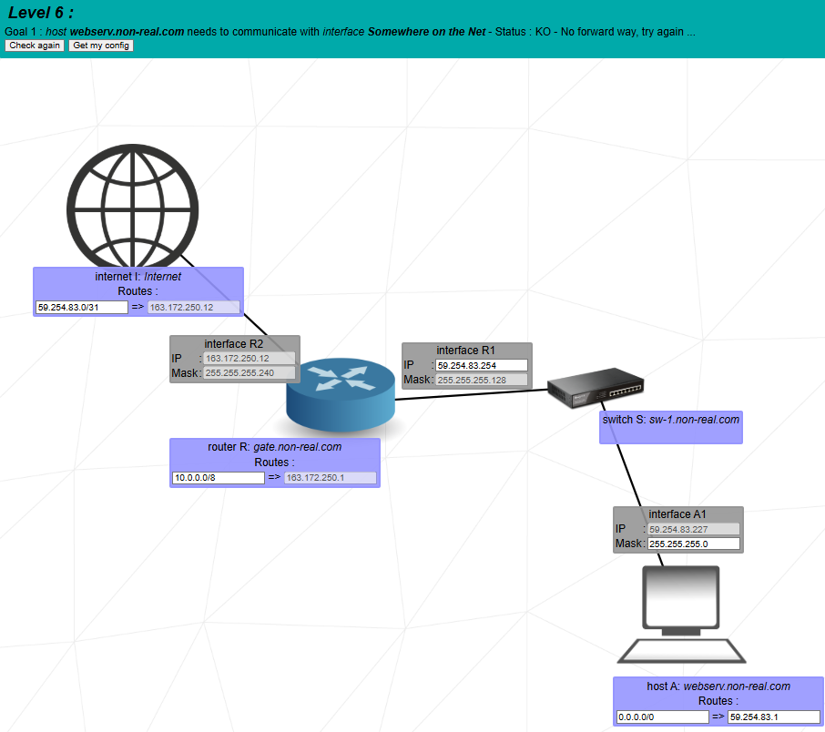
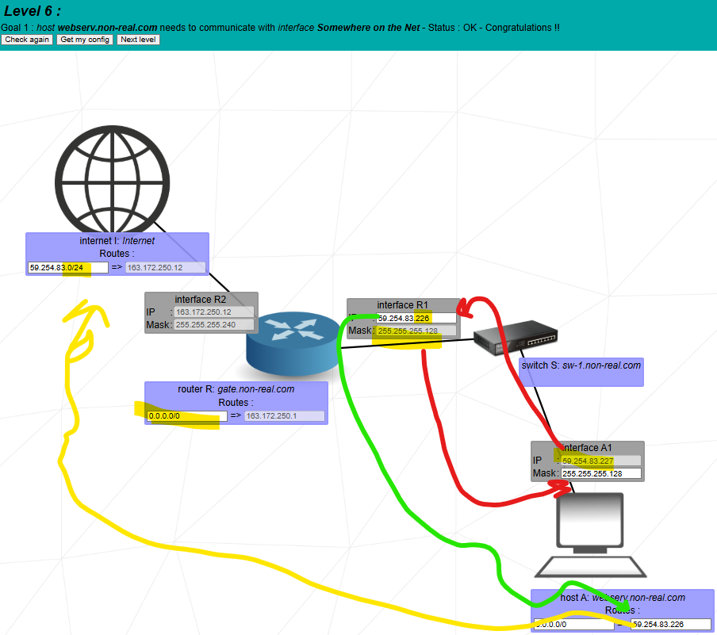

Goal: connect a local web server (Host A) to the Internet via router R, using default routes 0.0.0.0/0 and a return route on the Internet router for the public block.


Here you connect a local machine A to “Somewhere on the Net” (for example 8.8.8.8). Three things must be correct:
You copy the mask from R1 to A1 and choose a valid IP in the same /25.
59.254.83.227, mask 255.255.255.128 (/25).59.254.83.226, mask 255.255.255.128 (/25).Both A1 and R1 lie in the subnet 59.254.83.128/25, so A can use R1 as its local gateway.
Router R connects to Internet router I on another network. The exact mask is given by the game (here /28), but the idea is:
163.172.250.12, mask 255.255.255.240 (/28).163.172.250.1 (gateway side of the Internet router).So R sends any “unknown” traffic to 163.172.250.1, and the Internet knows to send any 59.254.83.x traffic back to 163.172.250.12 (R2).
A only needs one extra rule besides its own subnet: the default route.
Meaning: “If the destination is not in my local subnet 59.254.83.128/25, send to 59.254.83.226,” which is R1.
Router R knows its directly connected networks (LAN 59.254.83.128/25 and WAN 163.172.250.x/28), and you add a default route toward the Internet:
So any destination that is not LAN A and not the WAN subnet is forwarded to the Internet router I at 163.172.250.1.
The Internet must know how to send packets back to Host A. That is done with a route on router I:
This covers all addresses 59.254.83.0 – 59.254.83.255, including A
(59.254.83.227) and R1 (59.254.83.226). So any reply to 59.254.83.x will be sent
to 163.172.250.12 (R2), and then routed to R1 and A.
You see clearly both default routes being used: first on A (to R1) then on R (to the Internet router I).
Here the Internet router uses the route 59.254.83.0/24 => 163.172.250.12
to send the reply back into your network; then R forwards it to A.
“In Level 6 I connect a local host A to the Internet. First I put A and the router interface R1 in the same LAN by using the mask 255.255.255.128 (/25) with addresses 59.254.83.227 for A and 59.254.83.226 for R1 in the subnet 59.254.83.128/25.
Then I configure routing. On A I set a default route 0.0.0.0/0 pointing to 59.254.83.226, so any destination outside the local /25 is sent to R1. On router R I set a default route 0.0.0.0/0 pointing to the Internet router 163.172.250.1 via interface R2. On the Internet router I I add a route 59.254.83.0/24 via 163.172.250.12 so that replies to any 59.254.83.x address are sent back through my router. As a result, when A sends to an external IP like 8.8.8.8, the traffic goes A → R1 → R2 → Internet, and the reply uses the 59.254.83.0/24 route to return to R → R1 → A.”